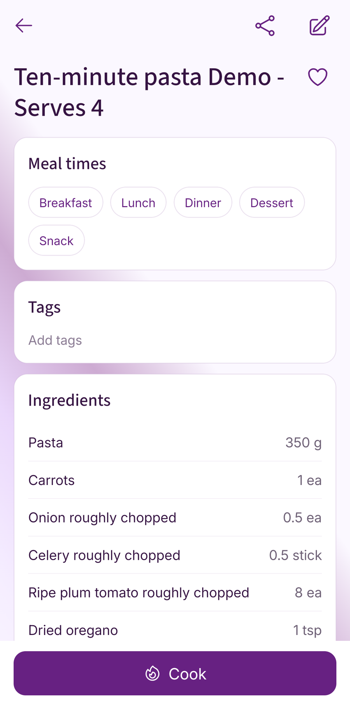
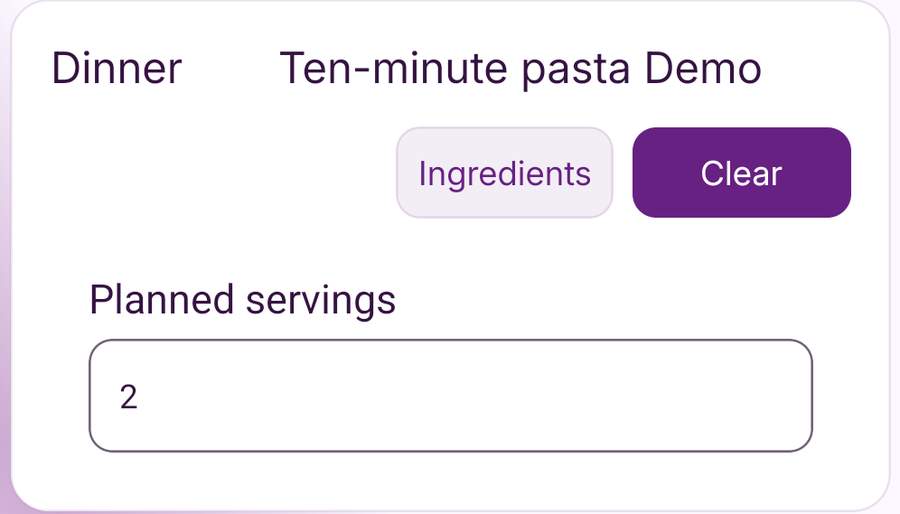
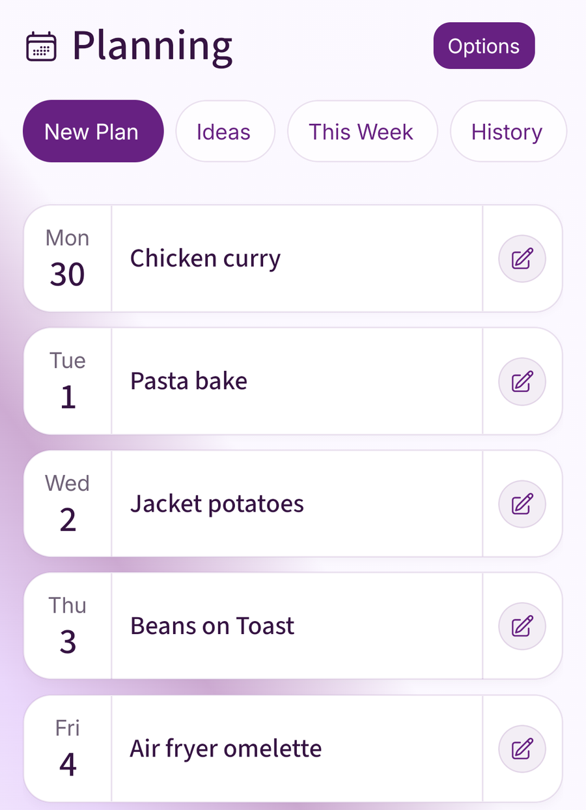

Meal planning for two works best when both people can see what needs doing and take responsibility for a useful part of it. Agree the week, make the cooking information easy to find, and decide how you will handle a change before somebody is halfway through the shop.
You do not need to cook together every night or split every job down the middle. A workable arrangement takes account of work, travel, energy, preferences and the jobs each person is willing to own. Start with the next few dinners, then adjust the routine after trying it.
Agree a week you can actually cook
Start with when you will both be home, rather than a list of recipes. A meal that takes attention at the hob may suit Saturday and be a poor choice for a Tuesday with a late train. If only one person is eating at home, write that down before buying for two.
Look at the next week together and answer four questions:
- Which evenings are we eating at home, and who is eating?
- Who has time to cook on those evenings?
- What food do we already have that we want to use?
- When can one of us shop, and what spending limit are we working to?
Choose a few familiar meals first. Leave a simple option for a busy evening and agree what counts as a backup: perhaps beans on toast, an omelette or a meal you already know how to make. The right choice is one both people will recognise and can prepare with the ingredients available.
Different appetites do not require two unrelated menus. You might share the main dish and choose different sides or amounts. Agree those details before the shop. For the wider routine, see building a weekly meal plan that can change.
Divide the decisions as well as the jobs
“You cook and I shop” still leaves several jobs unclaimed. Somebody has to choose the meals, check the cupboards, work out missing ingredients and notice when the arrangement no longer fits. Name those jobs so one person does not become the permanent coordinator by default.
One approach is to give each person complete responsibility for a couple of dinners: choose something suitable, put it in the agreed plan, check the ingredients and cook it. The person shopping can then buy from the shared list without having to guess what an unfinished meal idea needs.
- Meal choice: who will choose each dinner, and when does it need to be decided?
- Ingredient check: who will check the recipe, quantities and food already at home?
- Shopping: who will take the list, and who can answer a question about a missing item?
- Cooking and clearing up: what arrangement feels manageable this week?
These are agreements between you. The Fameally examples below show meals, plans and lists; they do not assign cooking or shopping jobs to named people in the app. Keep responsibility in a shared note, calendar or conversation that you both use.
You can rotate jobs, keep a division that suits you, or rebalance for a demanding week. Equal numbers of dinners are not the only useful measure: shopping and cooking can take very different amounts of work.
Make the cooking information available to either person
A meal name is enough when both people know the recipe. It is less helpful if the person cooking has never made it and the method lives in the other person's browser tabs. Before handing over a dinner, make sure the cook can find the ingredient quantities, instructions and any choices you agreed.
In Fameally, the shared household needs Family access. Each person uses their own account and joins the same household workspace. Follow the household-sharing tutorial for setup and invitation problems; agree the weekly responsibilities separately.
For the app examples in this guide, the Planning, meal details, Cook and Shopping screens were checked in Fameally 1.9.80 on Android 14, on 24 November 2026, using a demonstration household. The screenshots are current captures of that release. iPhone, iPad and a new two-device sync test were not part of this walkthrough; another version or platform may look different.
Open Library → Meals and choose a meal to inspect its ingredients. Cook opens the cooking view; check that useful method steps are present before relying on it for an unfamiliar dinner. If instructions are missing, keep the original recipe available to the person cooking. An imported name or ingredient list alone does not establish that the whole recipe was saved.

Check quantities for the people actually eating. In Fameally 1.9.80, a recipe's Serves value and a meal's Planned servings are separate settings. We verified a demonstration recipe with a yield of four and two planned servings: the shopping list showed four of an ingredient recorded as eight in the recipe.
To check this in the released Android app, open the day in Planning, select the dinner, enter the intended Planned servings and choose Save. Review the resulting list in Shopping. A meal without a recipe yield showed Add recipe serving count to scale this meal instead; check its recipe information before expecting scaled amounts.

A worked week: one person shops, the other cooks on Tuesday
Alex and Sam both eat at home from Monday to Thursday. Sam can shop on Monday; Alex expects to cook on Tuesday but sometimes finishes work late. They agree this example before Sam leaves for the shop.
| Day | Dinner decision | Agreed responsibility | Useful handover |
|---|---|---|---|
| Monday | Jacket potatoes with agreed toppings | Sam checks the cupboards, shops and cooks. | Alex adds anything needed for Tuesday before the shop starts. |
| Tuesday | Pasta bake | Alex cooks and checks the method in advance. | If work runs late, use Thursday's quick dinner and move the pasta bake. |
| Wednesday | Chicken curry they both know | Sam cooks; Alex clears up. | Agree the sides and quantities while making the list. |
| Thursday | Beans on toast as the flexible meal | Alex cooks. | If Tuesday changed, check the pasta-bake ingredients and cook that instead. |
| Friday | Both eating out | Neither plans a shared dinner at home. | Do not add a dinner's ingredients just to fill the space. |
This is an original planning example, rather than a screenshot of Alex and Sam's accounts or a full shopping basket. Choose meals, quantities and responsibilities that fit your own household.

The demonstration screen shows where the meal choices can be visible together. It does not show which partner will cook. Keep that agreement alongside the plan so either person can explain what is happening without asking the other to reconstruct the week.
Make the shopping handover clear
Before the shopper leaves, both people should know whether the list is ready. A short check prevents the shopper from treating a half-finished plan as a complete instruction.
- Finish the agreed meal choices. The person responsible for a dinner checks that it is in the intended week.
- Check the ingredients at home. Review amounts and remove things you already have from the purchase decisions.
- Add the rest of the shop. Breakfasts, lunches, drinks and household items may not belong to the dinner recipes.
- Agree how to handle a missing item. Decide which substitutions are acceptable and when to ask before buying.
- Close the handover after shopping. Mention anything unavailable and update the dinner decision before somebody starts cooking.
If you use Fameally, open Shopping and review the relevant list and quantities together. Shared access helps both people find the information; it does not establish that the cupboard check has happened or that a missing ingredient has been replaced. The meal-plan-to-shopping-list guide covers that check in more detail.
If your phones differ, the broader guide to sharing between iPhone and Android explains the setup choice. Once both people can access the household, the important weekly handover is the same: agree when the list is ready and communicate exceptions.
Handle a late finish without planning the whole week again
On Tuesday afternoon, Alex learns they will be home late. The agreed fallback makes the decision small: tell Sam, use the beans-on-toast option that evening and move the pasta bake to Thursday if it still suits both people.
In the checked Fameally release, selecting a planned dinner opens its plan controls. After changing a meal, return to the week and check the displayed dinner, then review Shopping. The list still needs a human check: ingredients might already have been bought, marked off or needed for another meal.
The app change is only part of the handover. A useful message is specific: “I'm late tonight. Shall we use the quick dinner and move pasta bake to Thursday?” Wait for agreement where the change affects the other person's work. A changed plan on a screen is easy to miss.
If Thursday no longer works either, choose a new use for the ingredients together. Avoid adding another meal and another shop while leaving the original ingredients unexplained. Our duplicate-grocery guide covers the separate routine for checking what is already bought or at home.
Review the arrangement after trying it
At the next planning conversation, ask which job was harder than expected and which information was missing. Did the shopper have to finish the recipes? Did the cook discover an essential ingredient too late? Did one person still have to remind the other about every step?
Change one part of the arrangement rather than rebuilding everything. You might move a more involved dinner to the weekend, give the shopper fewer cooking nights, or agree a clearer deadline for adding ingredients. Keep the parts that worked.
For your first week, agree three dinners, one backup and one shopping handover. Make the recipes available, name who owns each job and check the arrangement together afterwards. That is enough to start sharing the work in a way you can both see.